Cenário e Gargalo Operacional
Eventos corporativos costumam ser operados com planilhas paralelas e longas cadeias de e-mail: uma lista de convidados em um arquivo, as confirmações espalhadas em respostas individuais, a logística de voos e hotéis em outra planilha e o credenciamento feito em papel na porta do evento. O custo real não é o trabalho de montar cada arquivo, e sim a divergência entre eles no dia da operação.
O Gerentevent nasceu para transformar esse processo em um fluxo único e rastreável: cada convidado tem um token individual que atravessa toda a jornada — convite, confirmação, credencial, check-in e certificado —, e cada organização enxerga apenas os próprios dados.
Arquitetura da Plataforma
O frontend é uma SPA em React 19 com Vite e Tailwind CSS 4, servida pela Vercel. Todo o backend roda no Supabase: PostgreSQL com Row Level Security ativo em todas as tabelas, autenticação própria e Edge Functions em Deno para tudo que exige privilégio elevado — disparo de e-mails transacionais, geração de PDFs, URLs assinadas para arquivos privados e operações administrativas de usuário.
O isolamento entre clientes é feito por workspace: cada evento pertence a uma organização, e as políticas de RLS derivam a permissão do vínculo do usuário com aquele workspace — nunca de um papel global. Nenhuma query do frontend consegue enxergar dados de outra organização, mesmo que a chave pública da API seja conhecida.
- Multi-tenancy real: organizações, papéis por workspace e limites de plano aplicados no banco, não apenas na interface.
- E-mail transacional: envio via provedor externo com webhook de retorno, registrando entregas, aberturas, cliques e falhas por destinatário.
- Arquivos privados: anexos, documentos e imagens ficam em buckets fechados, acessados apenas por URL assinada gerada sob demanda por Edge Function.
- Internacionalização: três idiomas (espanhol, português e inglês) com detecção automática e preferência persistida no perfil do usuário.
Fluxo do Organizador
O organizador começa pelo painel da organização, cria o evento com data, local, capacidade e modalidade, e a partir daí todo o trabalho acontece dentro do próprio evento, dividido em abas de Pessoas, Logística e Conteúdo.
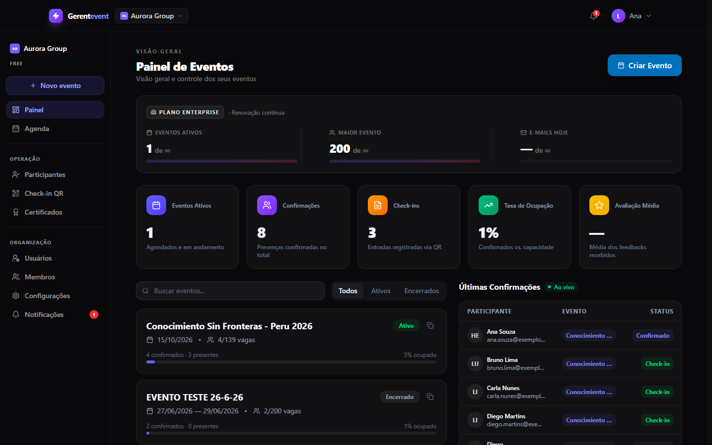
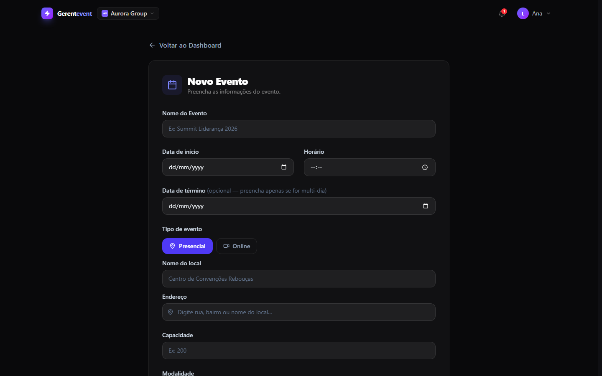
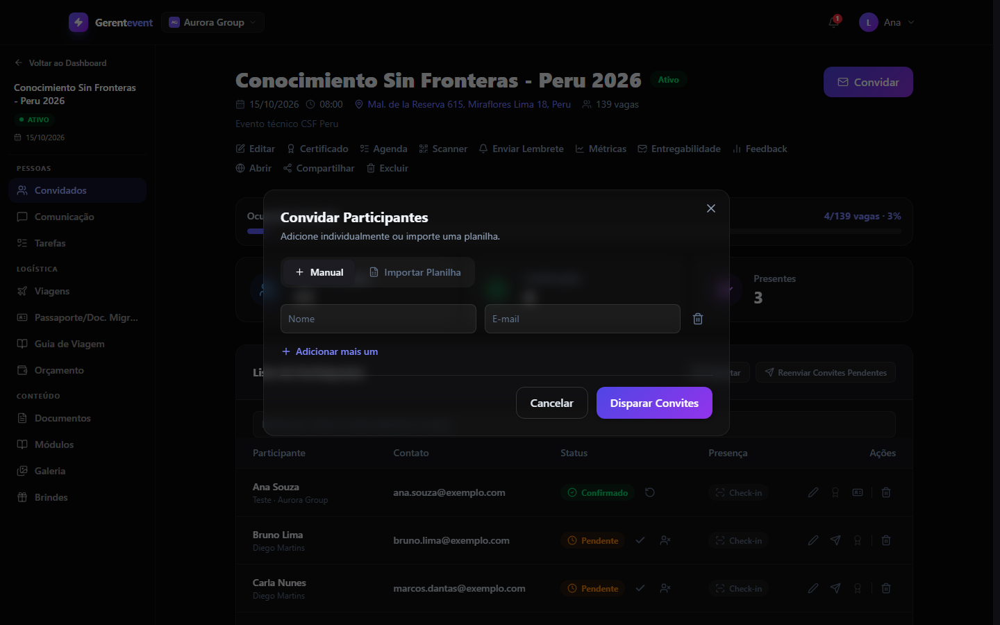
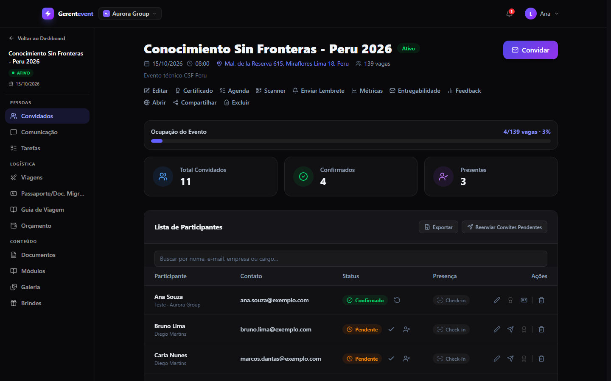
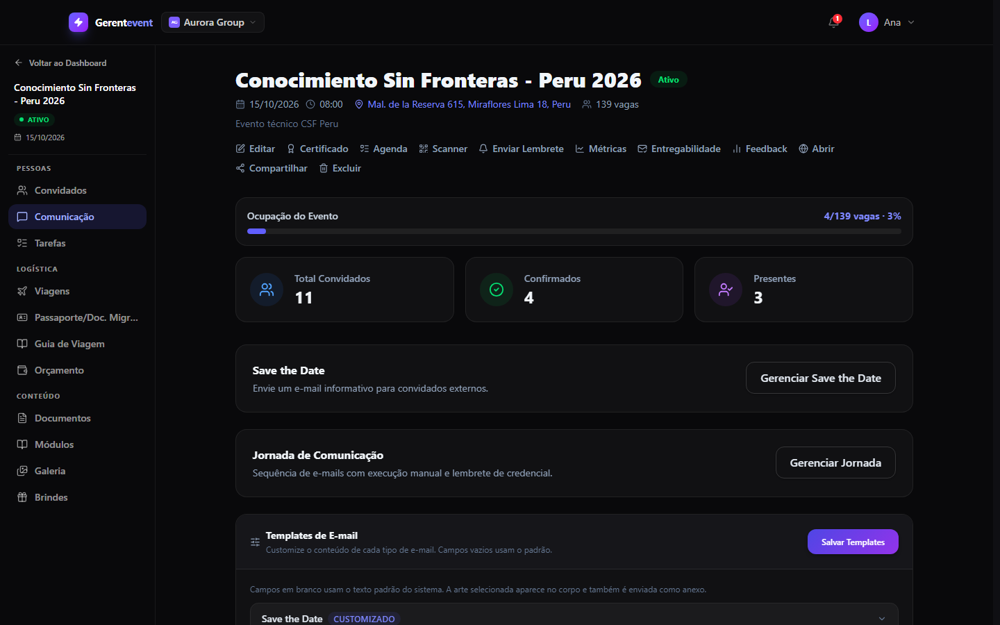
Logística de Viagem e Conteúdo
Em eventos internacionais, metade do esforço não é o evento em si: é levar as pessoas até ele. O módulo de logística concentra voos de ida e volta com conexões, hospedagem, guia de viagem, controle de brindes por participante e o orçamento da operação.
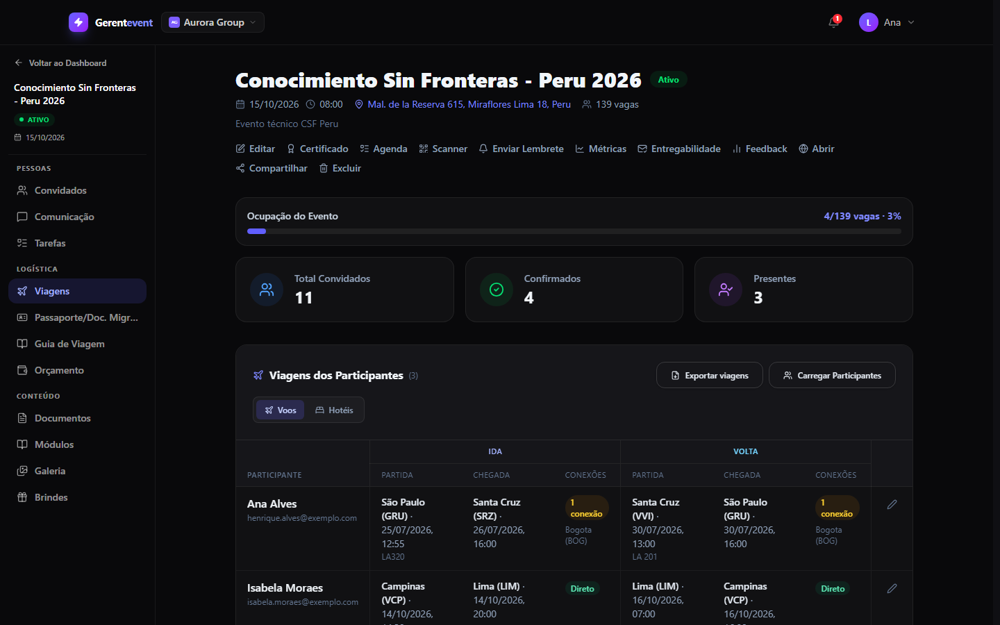
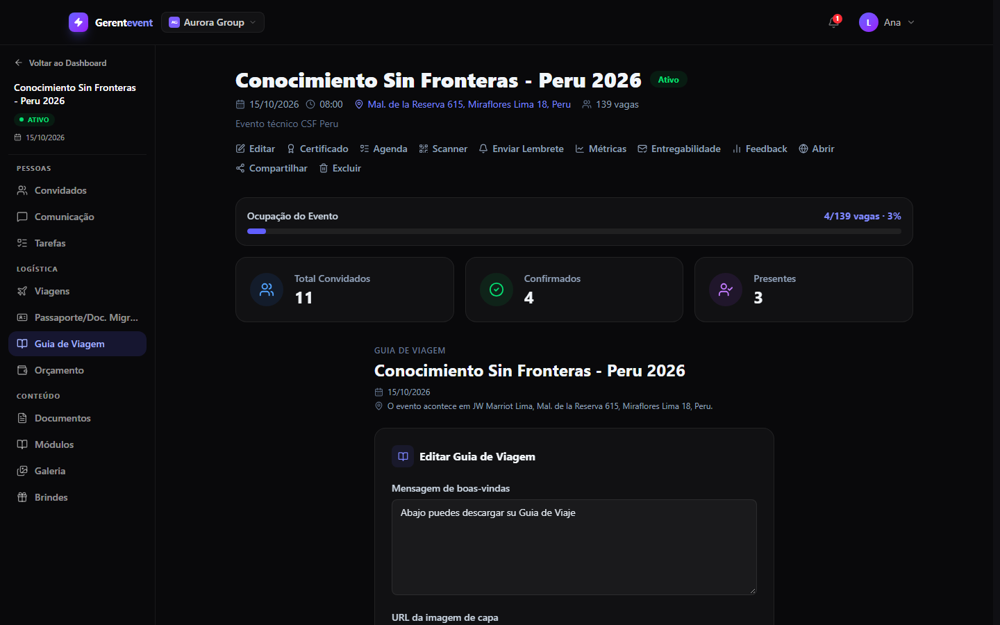
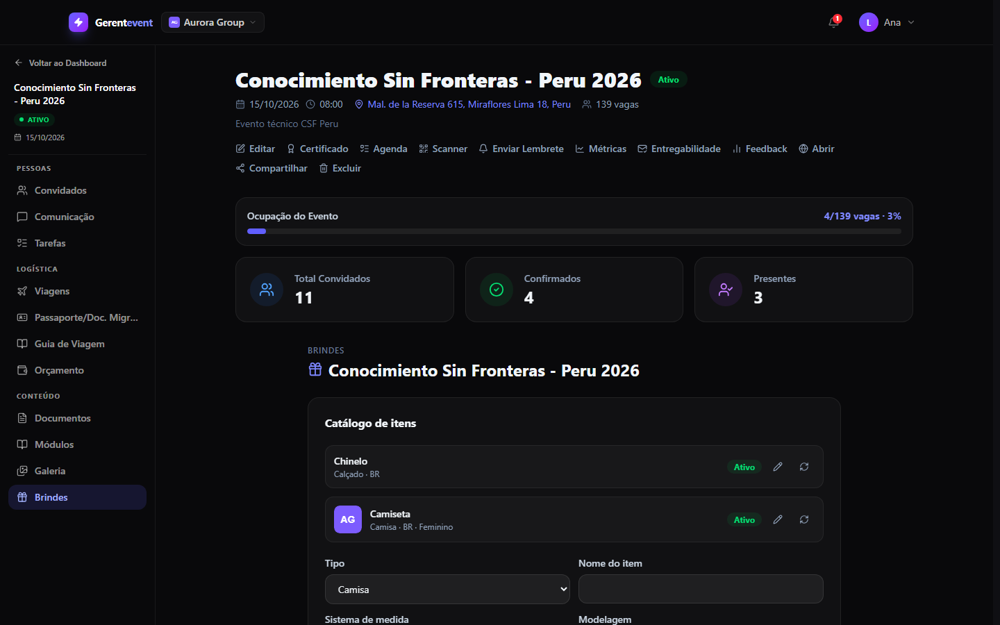
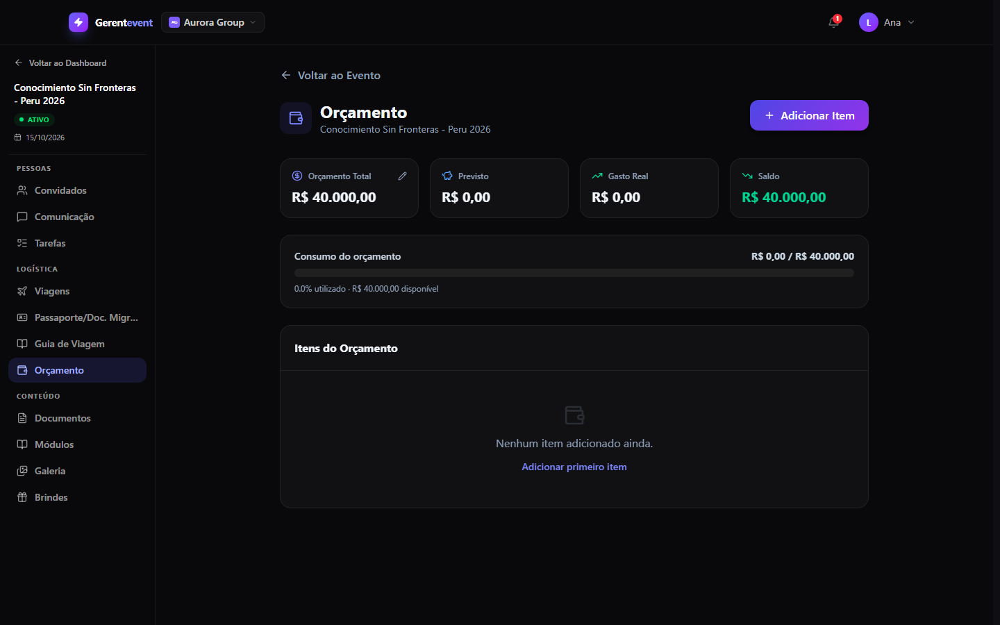
Credenciamento e Certificados
No dia do evento, o credenciamento é feito pelo próprio celular da equipe: a câmera lê o QR Code da credencial e registra a entrada. Quando a leitura falha — crachá amassado, celular sem bateria, participante sem o e-mail —, a mesma tela permite a busca manual por nome, e-mail ou empresa, com opção de desfazer o registro.
Depois do evento, o certificado é gerado em PDF pela Edge Function e disponibilizado ao participante, com o painel acompanhando quem já recebeu e quem ainda está pendente.
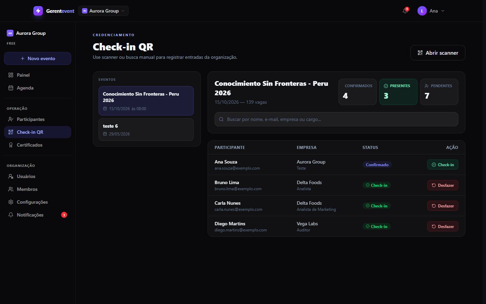
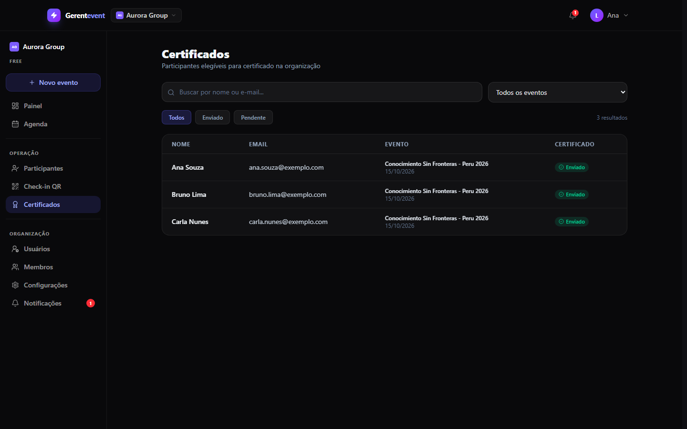
A Experiência do Participante
Do outro lado, o participante nunca precisa aprender o sistema. Ele recebe um e-mail, abre um link e encontra tudo em uma página só: confirmação de presença, agenda, credencial com QR Code, guia de viagem, brindes e certificado.
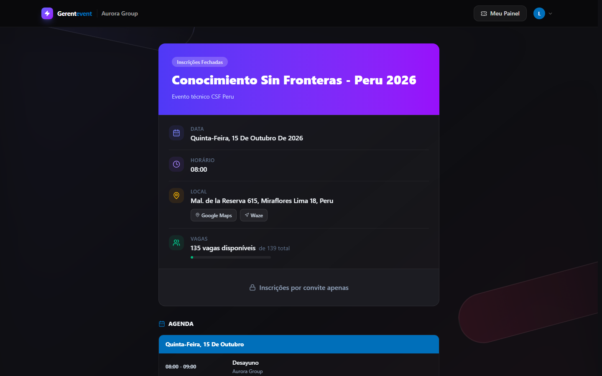
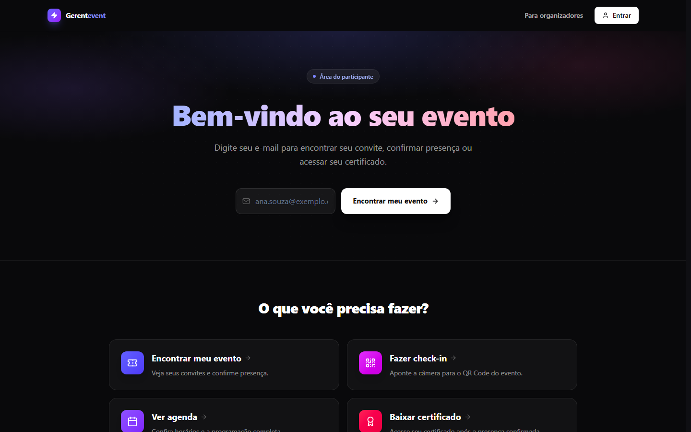
White-label por Organização
A plataforma foi pensada para atender mais de uma organização ao mesmo tempo. Cada workspace define o próprio logotipo, nome exibido, cor de marca e slug, e essa identidade é aplicada automaticamente nos e-mails transacionais, nas credenciais e nos certificados — sem que uma organização enxergue qualquer dado da outra.
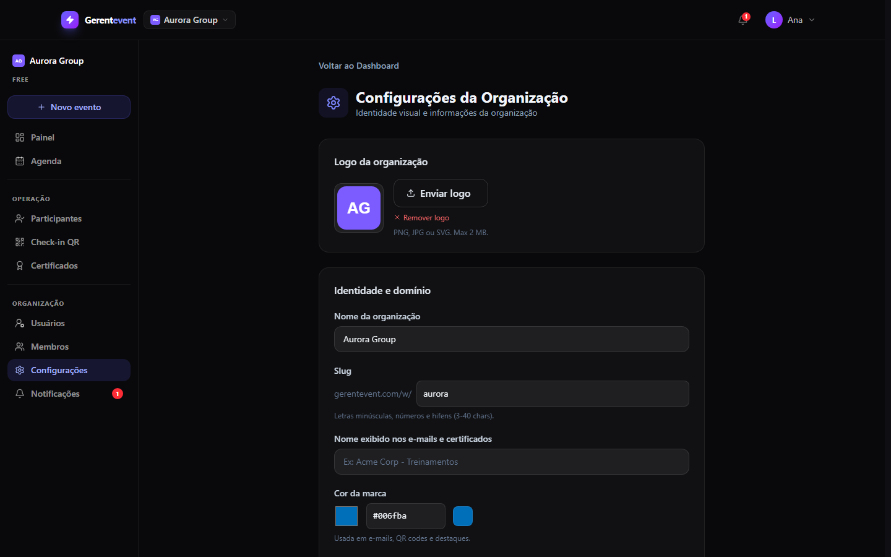
Decisões Técnicas
- O convite é o token: o identificador do convite funciona como QR Code, chave da credencial e do certificado. Um único registro carrega a jornada inteira, sem tabelas paralelas de códigos.
- Permissão no banco, não na tela: o papel do usuário vem do vínculo com o workspace e é avaliado nas políticas de RLS. Esconder um botão nunca foi tratado como controle de acesso.
- Recursão em política de RLS: uma policy que consultava a própria tabela derrubou o login com erro de recursão infinita do PostgreSQL. A correção foi reescrever a regra com função auxiliar, e a lição virou padrão do projeto.
- Autenticação própria em vez de magic link: o fluxo de acesso passou a usar token próprio com troca obrigatória de senha no primeiro acesso, eliminando a dependência de links de e-mail que expiravam antes de o participante abrir.
- Abas com estado preservado: as seções do evento viraram abas internas que mantêm o conteúdo montado, evitando recarregar listas grandes a cada troca de contexto.
- Custo como restrição de projeto: sem agendador no plano gratuito do banco, os lembretes foram desenhados para execução manual e idempotente, em vez de depender de cron.
Time do Projeto
O Gerentevent foi construído em dupla. Livia Gundelach atuou como Product Owner: trouxe a operação real de eventos corporativos para dentro do produto, definiu o que cada tela precisava resolver, validou cada entrega com quem de fato usa a ferramenta e apontou as melhorias que vieram depois do primeiro evento. Boa parte do que existe aqui — do fluxo de convites ao guia de viagem e ao controle de brindes — nasceu dessa leitura funcional.
Do meu lado ficaram a arquitetura, o desenvolvimento e a infraestrutura: modelagem do banco e políticas de segurança, frontend, Edge Functions, e-mail transacional e deploy.
- Livia Gundelach — Product Owner: concepção funcional, definição de requisitos, validação com usuários e evolução do produto.
- Caio Henrique Lopes da Silva — Software Engineer: arquitetura, desenvolvimento full-stack, segurança de dados e operação.
Status do Projeto
A plataforma chegou a operar eventos reais, com convites, credenciamento e certificados emitidos em produção. O projeto está descontinuado e o repositório permanece privado; este estudo de caso documenta o produto e as decisões de engenharia por trás dele.